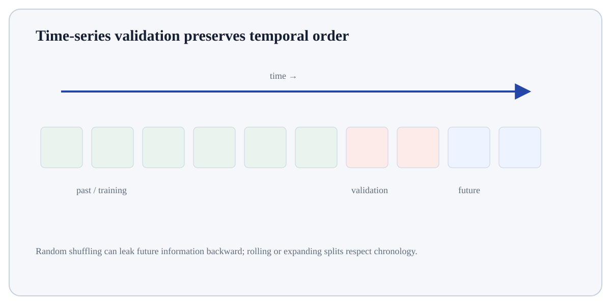

Follow the transformation
Define the entity and event that counts.
Define the denominator/population at risk.
Choose a time window and cohort boundary.
Time Series Trend and Seasonality is a business-analysis pattern that converts event or transactional data into a decision-focused measure.
Time Series Trend and Seasonality is a business-analysis pattern that converts event or transactional data into a decision-focused measure. The numerator, denominator, cohort definition and time window must be explicit for the metric to be comparable.
Time Series Trend and Seasonality matters because business metrics are often ratios, cohorts or event sequences whose meaning depends on denominator, time window and eligibility rules. Those definitions must stay stable before segments or periods can be compared.
Treat this as a sequence of observable decisions rather than one opaque command. Stage 1: Define the entity and event that counts. Stage 2: Define the denominator/population at risk. Stage 3: Choose a time window and cohort boundary. Final checkpoint: Connect the pattern to a decision rather than reporting a number alone.
Define the entity and event that counts.
Define the denominator/population at risk.
Choose a time window and cohort boundary.

Define the entity and event that counts. This is an input-preparation stage for Time Series Trend and Seasonality. Verify the relevant type, shape, units, keys, missingness or assumptions before later steps depend on them.
Observed series = long-run level/trend + repeating seasonal pattern + irregular remainder.
Example: monthly ice-cream sales may rise over years (trend) and peak every summer (seasonality).Compare equivalent seasons and use time-aware validation; random row splits can leak future structure.
For Time Series Trend and Seasonality, connect the displayed result to the specific input and mechanism above; independently verify one value/state change rather than treating successful execution as proof.
RateEvents or successes divided by an eligible population.GrowthRelative or absolute change between periods.RetentionShare of an initial cohort still active at a later period.Funnel conversionShare progressing from one defined stage to the next.Use Time Series Trend and Seasonality when it connects a clearly framed stakeholder question to measurable evidence and an action or decision.
Reframe the analysis if the decision, unit of analysis, metric definition, comparison group or time window is still ambiguous; more computation will not repair an undefined question.
Build a tiny, inspectable example of Time Series Trend and Seasonality. First define the entity and event that counts. Then define the denominator/population at risk. Write the expected result before running it, and explain one condition that would make the result misleading or invalid.
Before trusting a result from Time Series Trend and Seasonality, which check provides the strongest evidence that you understand and applied it correctly?
Step 1Define the entity and event that counts.Step 2Define the denominator/population at risk.Step 3Choose a time window and cohort boundary.Step 4Calculate the measure by relevant segment.